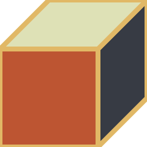

In 2011, John Romanishin i-a propus profesoarei sale, Daniela Rus, un nou design pentru roboții modulari, aceasta spunând “Este imposibil”
Doi ani mai târziu, Rus i-a arătat colegului Hod Lipson, un cercetător în robotică, un videoclip cu prototipul roboților, bazat pe design-ul lui Romanishin in acțiune. Acesta a afirmat deasemenea “Imposibil”
In noiembrie, Romanishin, acum un cercetator al MIT”s Computer and Artificial Intelligence Laboratory (CSAIL)- Rus împreună cu colegul său Kyle Gilpin vor demonstra o data și pentru totdeauna că este posibil, prezentând un document ce descrie noul lor robot la IEEE/RSJ International Conference on Intelligent Robots and Systems.
Cunoscuți sub numele de M-Blocks, roboții sunt cuburi ce nu detin părți exterioare mobile. Totuși, sunt capabili sa escaladeze și sa se ocoleasca unul pe celălalt, să facă salturi și chiar mai mult atunci când sunt suspendați de o suprafată metalica
În interiorul fiecărui M-Block există o volantă ce poate atinge o viteză de până la 20.000 rotatii/minut ; atunci când volanta este înfrânată , aceasta trimite momentul unghiular spre cub. Pe fiecare margine și fată a unui M-Block sunt magneti bine poziționati ce permit atașarea lor , unul de celălalt.
“Un lucru ca acesta a încercat comunitatea de robotică modulară să facă de ceva timp” spune Rus, professor de inginerie electrica.” Doar aveam nevoie de cineva să ducă proiectul la capăt, în ciuda descurajărilor”
